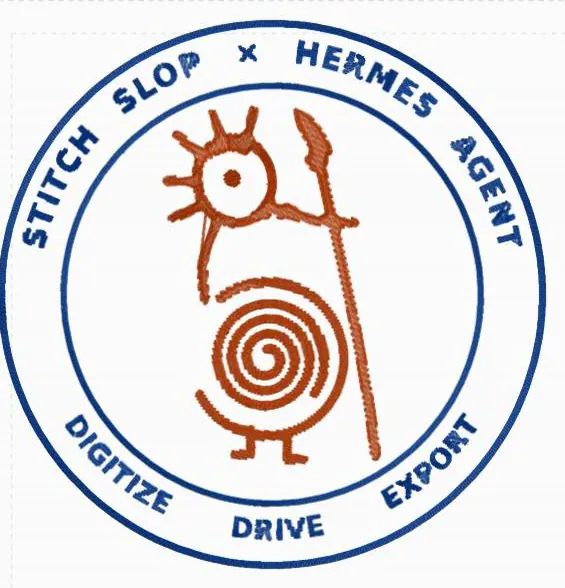

Hermes Agent plugin · v0.2.2
stitchslop
Drive the embroidery app from chat.
Watch the real Stitch Slop editor in a pane, run its own commands, digitize artwork, letter a ring, and export DST / PES.
4 tools 477 o200k tokens 0 core deps DST · PES

Made end to end from a chat session, as shown in the README.
Why it exists
Stitch Slop is a browser embroidery digitizer whose designs live in a tab. A chat agent can't reach that tab: the site refuses to be framed, and even if it didn't, an agent can't click.
This plugin solves both halves. The tab dials out over Stitch Slop's published loopback WebSocket bridge, which this plugin implements in the standard library. A plugin-owned Chrome draws the real app on a private X display, and the pane streams it and forwards your clicks and keys back. You see the design, the agent edits it, and you take over whenever you like.
Patches
Four tools and no core dependencies
Live pane that streams a dedicated Chrome window of the Stitch Slop editor and forwards clicks and keys
Bridge protocol for the official Stitch Slop agent panel (loopback WebSocket)
Digitize artwork, arc typesetting / lettering, and export machine stitch files (DST / PES)
First pairing is pane-only: agent tools refuse a model-supplied token
Bundled skill covering the digitizing workflow
Pattern instructions
Open the Stitch Slop editor in the Hermes pane and watch the live design while you talk to the agent
Digitize artwork into a machine stitch file and export DST or PES
Letter a ring or other curved text with the bundled arc-typesetting script
Run the editor's own commands through
stitchslop_callafter a hand-paired connectionReproduce the two-colour badge in the README (assets/stitch.jpg), which was made end to end from a chat session
Check bridge and browser status with
stitchslop_statusbefore starting work
The four needles
stitchslop_status- Bridge, tab, Chrome, relay and pane in one call. Start here when something looks wrong.
stitchslop_connect- Starts the bridge and waits for the tab using the stored pairing. Refuses a model-supplied token.
stitchslop_call- Runs one app verb (scene.describe, background.digitize, design.export, …). Images and exports are written to disk and returned as paths.
stitchslop_browser- Starts and stops the pane: Xvfb + Chrome + capture relay, returns viewerUrl.
The app owns the command list: over 80 verbs. stitchslop_call("x.list") answers with every real name.
The submission post
Pinboard
The Stitch Slop editor running in the Hermes preview pane. Two-colour embroidered badge reading Stitch Slop × Hermes Agent — Digitize, Drive, Export — around a spiral figure holding a staff. Architecture: tab to bridge to tools; Chrome to relay to pane. stitchslop for Hermes Agent banner. stitchslop social card.
Care label
hermes plugins install mojomast/hermes-stitchslop --ref 51c12d0fd957fb4f40f98253570eb33d791c314c
hermes plugins enable stitchslopThen pair once by hand. The agent tool refuses a model-supplied token (pair_via_pane); first pairing is a human action in the pane, as documented in the README. Linux is the documented platform. See source.md for the full pairing and security notes.
- 4 agent tools
- 477 o200k schema tokens
- v0.2.2 release
README documents python3 -m unittest discover -s tests and that hermes plugins validate and doctor --ci pass, but does not publish a test count. Core install has no Python dependencies; NumPy and Pillow are an optional art extra.